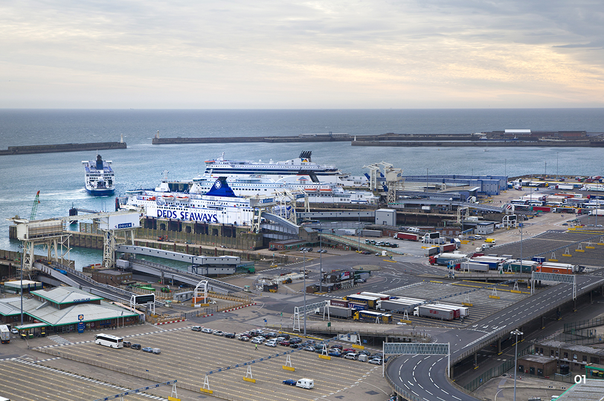
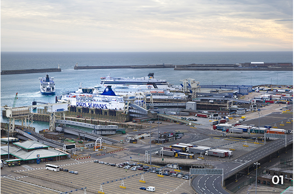

와 제 롤모델이 잡스에요!!! 아이폰 첫 출시되고 나서부터 계속 아이폰 쓰고 있는데 잡스가 너무 그리워요ㅠㅠ 지금은 돈만 벌려고 하는 것 같아서 디자인 발전도 없고ㅠㅠ와 제 롤모델이 잡스에요!!! 아이폰 첫 출시되고 나서부터 계속 아이폰 쓰고 있는데 잡스가 너무 그리워요ㅠㅠ 지금은 돈만 벌려고 하는 것 같아서 디자인 발전도 없고ㅠㅠ와 제 롤모델이 잡스에요!!! 아이폰 첫 출시되고 나서부터 계속 아이폰 쓰고 있는데 잡스가 너무 그리워요ㅠㅠ 지금은 돈만 벌려고 하는 것 같아서 디자인 발전도 없고ㅠㅠ와 제 롤모델이 잡스에요!!! 아이폰 첫 출시되고 나서부터 계속 아이폰 쓰고 있는데 잡스가 너무 그리워요ㅠㅠ 지금은 돈만 벌려고 하는 것 같아서 디자인 발전도 없고ㅠㅠ와 제 롤모델이 잡스에요!!! 아이폰 첫 출시되고 나서부터 계속 아이폰 쓰고 있는데 잡스가 너무 그리워요ㅠㅠ 지금은 돈만 벌려고 하는 것 같아서 디자인 발전도 없고ㅠㅠ
마켓리포트
브렉시트, 최악의 시나리오에
대비하는 물류업계
대비하는 물류업계

글
Greg Knowler
(HIS Markit의 JOC 수석 편집자)
3월 29일 ‘브렉시트’ 현실화를 앞두고 화주 및 물류 관계자들은 원활한 공급망 가동을 위한 방안을 모색하며 최악의 상황에 대비하고 있다. 이러한 긴장감이 감돌고 있는 가운데, 영국 메이 정부와 유럽연합(EU) 간의 최근 합의안은 정치적인 지지를 얻는 데 실패했다. 현재 브렉시트 비상계획에 따르면 영국과 유럽 간 모든 거래에 있어 세계무역기구(WTO) 규정이 적용될 것으로 조심스레 관측되고 있다.
유럽의 무역조사기관인 Atradius에 따르면 브렉시트 개시 이후 영국에서 유럽연합으로 수출되는 제품(영국 전체 수출의 48%)은 5.7%의 무역가중평균관세를 적용받게 되며, 유럽연합에서 영국으로 수출되는 제품(유럽연합 전체 수출의 16%)은 4.3%의 관세가 적용될 것으로 예상했다. Atradius는 “특히 식료품과 농산물에 대한 국경 검문 및 규제 등 비관세장벽 또한 대폭 강화될 것”이라고 언급했다.
이에 일부 물류업체들은 영국 수입품에 대한 통관 및 서류 검사 강화로 인해 야기될 지연을 상쇄하고자 3월 이전부터 꾸준히 재고를 확보하고 있다. 통관 절차 지연으로 영국 남동부의 Dover<사진1> 참조와 프랑스 북서부 Calais 사이에 위치한 ‘도버해협’ 운송로의 처리 물동량은 크게 줄어들 것으로 예상된다. 이에 따라 현재 유럽으로부터 오는 로로선(Ro-Ro, 자동차·컨테이너 운반선) 중 도버해협을 건너는 75% 또는 4백만 이상의 트럭 유닛(트럭, 트레일러, 화물기사)이 영향을 받을 것으로 알려졌다.


01영국의 Dover항
옵션: 영국/EU로 재고거점 운영 이원화
Tigers Global Logistics의 영국·유럽지역총괄 이사인 Shahar Ayash는 “브렉시트는 어떤 식으로 합의가 도출되더라도 무역에 영향을 미칠 것이며 이에 따라 고객들은 그들의 전략을 수정할 필요가 있다”고 말한 바 있다.
물류업체들은 통상적으로 유럽 내 통합화된 대형 물류센터를 사용하여 지역 공급망 관리, 규모의 효율성, 비용 절감, 벤더 일원화를 관리하는 전략을 추구함으로서 비즈니스 전반에 대한 가시성과 통제성을 확보할 수 있었다.
Ayash 이사는 “우리는 고객들에게 영국과 유럽으로 재고 관리 거점을 이원화한다면 여러 가지 이점을 누릴 수 있다고 말하고 있다”며, “고객들은 확장성, 가시성을 확보할 수 있을 뿐만 아니라 지리적 접근성을 활용하여 더 빠르게 배송할 수 있으므로 비용절감을 이룰 수 있다”고 말했다.
하지만 TOC국제물류의 유럽 해상운송부문 담당이사인 Johannes Barthels는 운송업자들로 하여금 이러한 계획에 동참하도록 유도하는 것은 쉽지 않다고 말한다. 많은 물류업체들은 계약을 체결하기 전에 영국과 유럽연합이 어느 정도의 합의를 이뤄내기를 기다리고 있기 때문이다. Barthels 이사는 JOC 인터뷰를 통해 “대부분의 고객들은 매우 신중한 입장이며, 영국보다 유럽 대륙에서 물류창고를 찾고 있다”고 밝히며, “영국에 위치한 창고 중 일부는 계약자를 구하지 못해 상당수가 비어있는 상태”라고 말했다.
모두가 물류창고를 유럽 대륙으로 이전하는 것에 동의하는 것은 아니다. 영국 리버풀(Liverpool)에 위치한 항만운영사 Peel Ports는 브렉시트 비상 대책안에 관한 보고서를 통해 비상용 안전 재고를 확보하기 위해 영국 내 창고를 이용하는 것은 오히려 부정적인 결과를 초래할 수 있다고 경고했다.
Peel Ports는 이러한 계획이 국경 통관 시 지연을 완화시킬 수는 있지만, 트럭들의 주행거리 증가를 야기시켜 물류 공급망 내 비효율이 발생할 수 있다고 말했다. 이 경우 화물은 적어도 2배 이상의 처리 과정이 필요하게 되어 인건비 및 물류비가 증가하게 되고, 상품 훼손의 위험성도 상승하게 된다. 또한 대부분의 회사들이 창고를 탄력적으로 이용할 수 없을 것이고 나아가 5년 이상의 장기 리스 계약을 요구할 가능성도 있을 수 있다.
이에 Peel Ports는 부패성이 없는 화물의 경우 무동력 트레일러(Unaccompanied Trailer)<사진2> 참조를 이용할 것을 한 가지 해결책으로 제시했다. Peel Port는 “제조업자와 소매업자가 비상시를 대비해 창고에 물품을 보관하기보다 스탠드 트레일러(Stand Trailer)를 이용해 항만 입구에 비상용 재고를 쌓아둔다면 창고의 필요성은 줄어들 것”이라고 말했다.
또, Peel Ports는 “브렉시트 이후에 발생할 수 있는 문제 중 하나는 동력원과 연결되어 있어 즉시 이동이 가능한 트레일러(Accompanied Trailer)<사진3> 참조의 경우, 영국의 Dover항에 도착하자마자 빠른 시간 내에 통관하기를 원하는 것”이라며 “그렇게 될 경우 통관 수요가 일시에 집중되면서 국경통제국(The Border Force)은 통관절차를 완료하는 데에 압박감을 느끼게 될 것”이라고 언급했다. 하지만 무동력 트레일러를 이용하게 되면 통관 수요가 분산되는 효과가 있어 통관 절차의 지연 문제가 어느 정도 해소될 수 있을 것이다.
02무동력 트레일러(Unaccompanied Trailer)
03동력원과 연결되어 있어 즉시 이동이 가능한 트레일러(Accompanied Trailer)
매일 영국-EU 국경을 넘나드는 트럭 14,000대
약 14,000대의 트럭이 매일 영국과 유럽의 국경을 넘는다. 그리고 영국은 53%의 수입품을 유럽에서 들여온다. 네덜란드 기반의 포워더 Jan De Rijk Logistics의 트럭들은 매년 2만 회씩 유럽과 영국 사이의 국경을 오간다. 이 회사의 CEO인 Sebastiaan Scholte는 “아무런 완충장치 없이 관계를 단절하는 ‘노딜 브렉시트(No Deal Brexit)’는 필연적으로 문제를 야기시킬 것”이라고 말했다. 이어 그는 “세계무역기구(WTO) 규정이 적용되면 수입관세는 더 높아질 것이고, 화물기사와 트럭도 통관 허가를 받아야 한다”며 “EU에서 영국으로 갈 수 있는 허가를 받기란 결코 쉽지 않을 것”이라고 덧붙였다.
한편, 브렉시트와 관련된 대부분의 비상계획은 일반 건화물(Dry Cargo) 운송 중심으로 진행되고 있어 유럽에서 영국으로 들어오는 냉장화물(Refrigerated Cargo)을 어떻게 운송할지가 새로운 골칫거리로 떠오르고 있다.
페리 운영사 Brittany Ferries는 브렉시트 이후에는 냉장품, 식료품, 천연 제품 등을 운송하는 모든 차량이 프랑스 도착 즉시 검역을 받게 될 것이라는 경고를 받았다고 전했다. Brittany Ferries는 매년 운행하는 21만 화물차 중 1/3정도가 영향을 받을 것으로 예상했다. Brittany Ferries는 성명서에서 “현재 프랑스의 로스코프(Roscoff), 생말로(St.Malo), 쉐보(Cherbourg) 등 주요 항만에는 보관 및 검역을 할 수 있는 대형 창고가 존재하지 않으며, 브렉시트가 현실화되는 2019년 3월까지 완공될 것 같지도 않다”고 명시했다.
Brittany Ferries의 CEO Christophe Mathieu는 “운송업자들이 프랑스로 진입할 수 있는 관문은 더 줄어들었고, 운송량을 늘리겠다는 어떤 계획도 무의미해졌다”고 언급했다. 또 “최악의 경우 냉장품을 운송하는 영국 운송업자들이 원활히 수속을 밟을 수 있는 프랑스 항구를 찾아 수백 마일을 돌아가게 될 수도 있으며, 겨우 도착한다 해도 검역을 위한 대기 시간은 더 지연될 수밖에 없다”고 덧붙였다.
브렉시트가 야기시키는 많은 혼란에도 불구하고 영국의 페리 운영사인 P&O Ferries는 3월 29일 전까지 당국이 실행 가능한 해결책을 마련할 수 있을 것이라 믿고 있다. P&O Ferries의 커뮤니케이션 책임자 Dan Bridgett는 “우리는 양측의 당국과 긴밀하게 협조해왔다”며, “양측 모두 차량들의 자유로운 무역 흐름이 경제적, 통상적으로 얼마나 중요한지를 충분히 인지하고 있다”고 언급했다. 이어 “통관 및 검역 과정상 혼선이 완화되어 우리의 서비스(수출입 업무)를 고객들이 계속 이용할 수 있기를 기대한다”고 말했다.
-
최고예요
322
-
좋아요
322
-
슬퍼요
322
-
그저 그래요
322
-
화나요
322